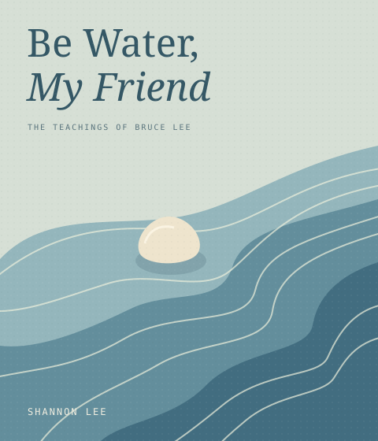
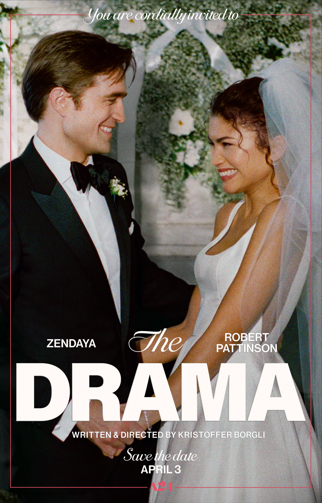
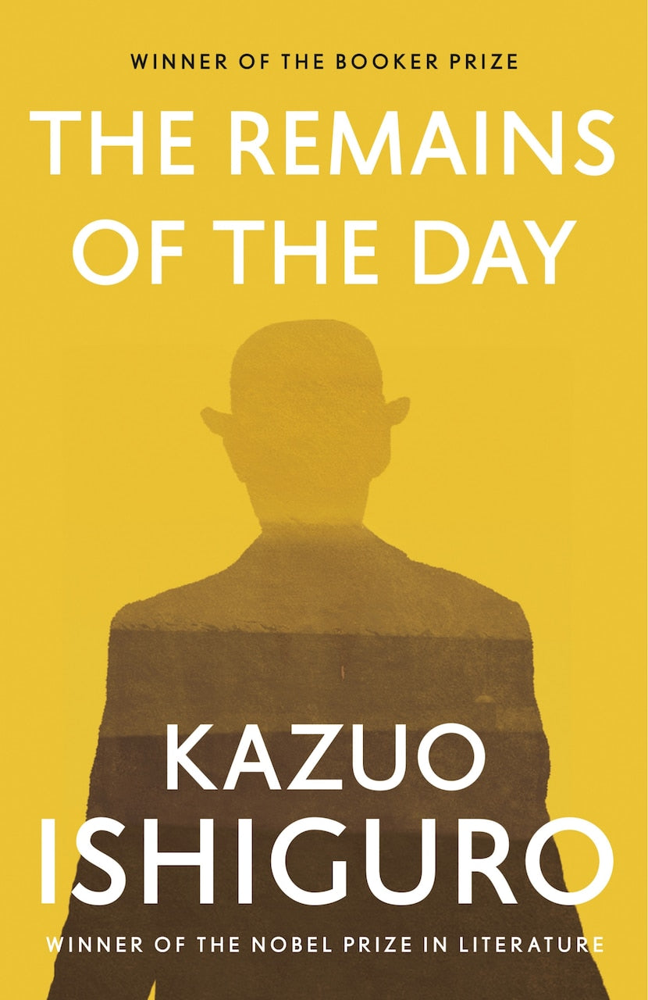

NOW READING · BOOK 01
Be Water, My Friend
Shannon Lee
“Empty your mind; be formless, shapeless like water.”Bruce Lee · Quote source ↗
Managing Director｜ZhenFund
Working in an early stage investment firm. Exploring the world of spatial computing, spatial intelligence and AI.
A few pages, a few frames, a few things that stay.

NOW READING · BOOK 01
Shannon Lee
“Empty your mind; be formless, shapeless like water.”Bruce Lee · Quote source ↗

WATCHED · FILM 02
Zendaya & Robert Pattinson
一部关于爱情如何穿过想象、秘密和时空，最后抵达真实的婚礼黑色喜剧
My take

FINISHED · BOOK 03
Bill Gurley
“Shouldn’t you spend it doing something you love?”Publisher’s description ↗

FINISHED · BOOK 04
Kazuo Ishiguro
“The evening’s the best part of the day.”Quote source ↗

My first visionOS app. A Christmas tree inspired by the one I bought in London.
Developer diary